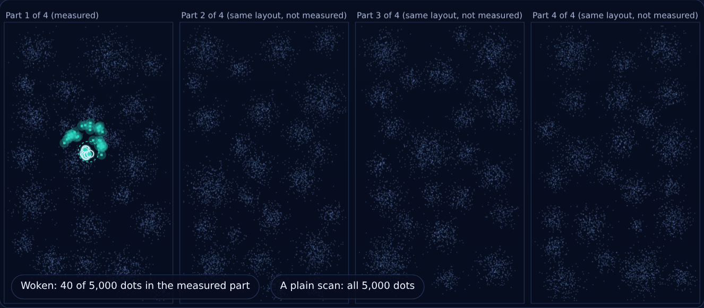

Nobody files the passages. TRACE lets them form their own groups by meaning, so developers and researchers can find the context their agents need. A question opens only the groups most likely to hold an answer, and every answer shows the page it came from. TRACE is a research prototype over one sealed library, and every number here has its limits written down.
0.79% scored; 0.9985 of exact search’s top ten retained
Scope: 50 test searches; passage-scoring work only, measured on each of four nearly equal library parts; retention averaged across the parts.

Passages so far: 020,000 dots stand in for 812,545 passages
A library grows. New passages just arrive, in no order. Nobody files them.
Illustration of the grouping and search. It is not data. 20,000 dots stand in for the 812,545 passages of our sealed library (one dot is about 41 passages). Where each dot sits, and how many groups there are, is drawn. What is real is the proportion: four nearly equal parts, and a question waking 0.79% of one of them (50 test searches, our library and method), drawn here as 40 of 5,000 dots.
The proof, in three minutes
Passage scoring covered under one percent of the measured library part.
Sealedlibrary behind the headline search result
0.79%of the measured library part scored per question
99.85%of exact search's top ten kept
670recorded Muse Code worker jobs behind this site
Scope: 50 test searches; passage-scoring work only, measured on each of four nearly equal library parts; retention averaged across the parts. Fine print: 812,545 passages · 99.9 million tokens — 0.11% short of the 100M target. Every number, with its caveats.
Recorded replayWorking todayBrowser modePrototypePublic backendOffLocal kitPlanned
The 3-minute film is being publishedIt will appear here as soon as it is on YouTube. Until then, watch the working versions on the Demos page.
Nobody files the books. A question walks to a few shelves. Every answer shows its page.
1. It sorts itself
Measured by us
Passages that mean alike end up on the same shelf, and no one adds labels. The order comes from the passages.
Passages that mean alike land on the same shelf, with no labels added.The grouping is measured in the evidence pages, with its limits. 50 test searches, our library and method.
2. A question wakes a part
Measured by us
A question is compared with the shelves first, and only the shelves most likely to hold the answer are searched.
0.79%of each of four nearly equal parts is scored per searchPassage-scoring work only (choosing the shelves and building them are separate costs), measured on each part; 99.85% of exact search's top ten kept, averaged across the parts. 50 test searches, our library and method.
3. Every answer has a record
Working today
Each result shows which article it came from, where in it, and a fingerprint your browser re-computes.
Real recorded searches you can open and checkOur own re-run matched on all claims. No outside party has checked it. Open the explorer.
The pictures and the plain-words walkthrough are on How it works.
A prototype layer on top of the coding agent you already use (Muse Code first, then Claude Code, Codex), giving it memory (a prototype link), a checker it cannot see, and a screen to watch it work. Prototype integration; see the companion repository for its current installation status.
A line of work where an AI looks at a screen and finds the right button to press. An early trial, a direction. Separate synthetic experiments used SAM and Muse Spark; the film's model is unconfirmed.
Not a keyword-search replacement: ordinary keyword search found the right source more often than TRACE did. No speed claim: a plain scan answers sooner. Not checked by anyone outside our team.